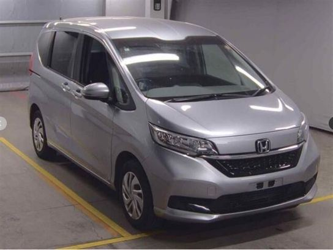
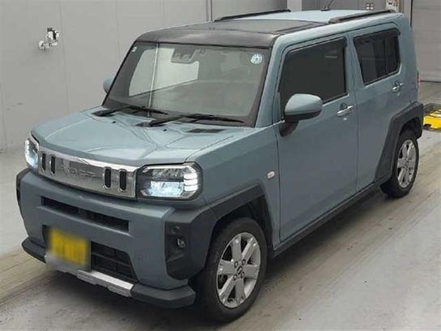
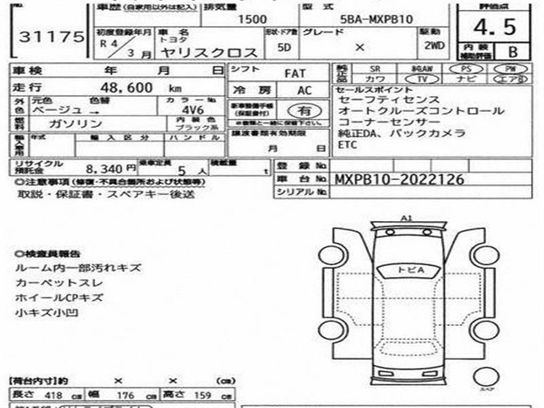
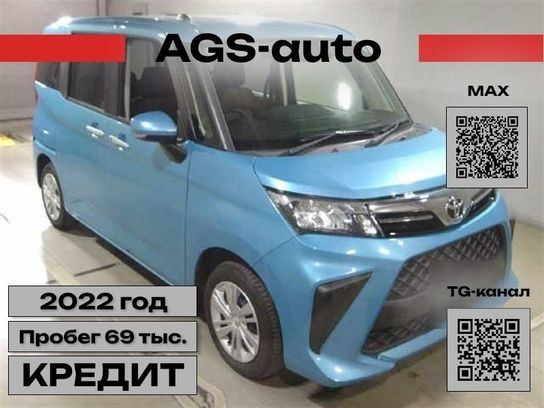
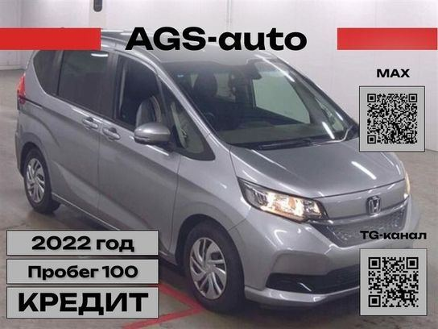
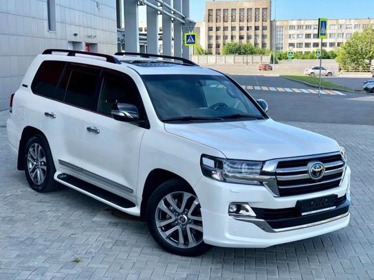
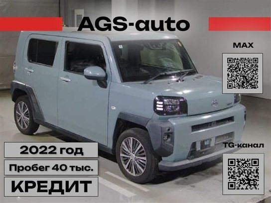
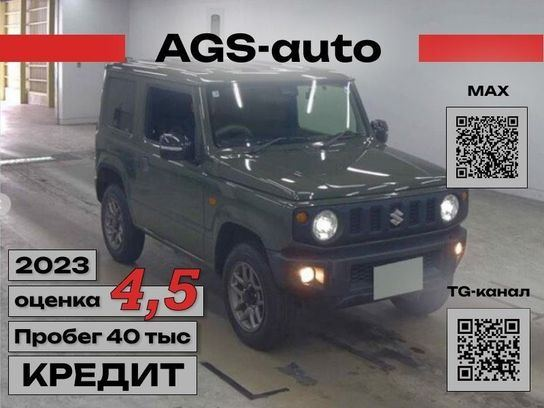
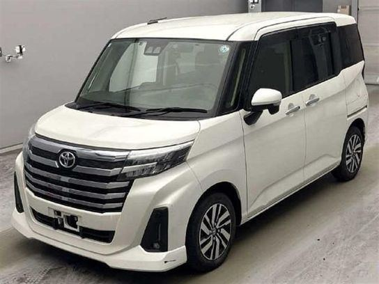

Объявления AGS-auto на Дроме · 25 ноября 2026
Стоянка в Японии — выберите свою
Кей-кары, компакты, семиместные минивэны и полный привод. «Хочу эту» откроет WhatsApp с машиной, ценой и ссылкой на объявление.
Бюджет
Какая
35из 35 подходят








Машины и цены — их объявления на Дроме на 25 ноября 2026. „в наличии в Японии“, „без пробега по РФ“ и маршрут „Япония → Владивосток“ — как написано в объявлениях. Что входит в цену, уточняйте у менеджера.
Посты канала t.me/AGSavto_goodwill
Из Владивостока — по всей стране
„Как автомобили из Японии попадают в Россию? А вот так! С помощью судна.“
В канале: „Наши автомобили всегда очень быстро разбирают, потому что их ценят за стоимость, надежность и комфорт!“ — 17 марта 2026. Отзывов в 2ГИС у компании пока нет; видеоотзывы клиентов — в канале.
Нет на стоянке — посчитать под заказ
Своя машина из Японии, Кореи или Китая
Цена в иенах, юанях или вонах — пошлина, утильсбор и сбор по курсу ЦБ на сегодня, и что изменится с 1 января 2027. Расчёт уйдёт в WhatsApp.
Подставить машину с их стоянки
Модель, объём и мощность — как в их объявлениях на Дроме. Цена в иенах условная, для примера: на Дроме цена в рублях.
Откуда
иен
Возраст машины
Двигатель
см³
л.с.
Кто ввозит
Машина и таможня
1 166 690₽
курс ЦБ на 21 ноября 2026: 100 иен — 51,54 ₽
Курс берётся с сайта ЦБ при открытии страницы. На таможне пошлину считают по курсу евро на день подачи декларации — итог может сдвинуться вместе с курсом.
- Машина927 724 ₽
1 800 000 иен × 51,54 ₽ за 100 иен — курс ЦБ на 21 ноября 2026
- Пошлина228 843 ₽
1,7 € за см³
- Утильсбор5 200 ₽
льготный коэффициент 0,26 × 20 000 ₽
- Таможенный сбор4 924 ₽
- Аукцион и расходы в стране, доставка до Владивостока, СБКТС и ЭПТС, услугатариф
По тарифу AGS-auto: назовут в ответ на расчёт.
С 1 января 2027 утильсбор на эту машину не меняется
Льготный утильсбор 3 400 / 5 200 ₽ — до 3000 см³ и 160 л.с. (электро — до 80 л.с.), одна машина в 12 месяцев, продавать раньше года нельзя без доплаты.
Ставки пошлины, утильсбора и сбора сверены 3 ноября 2026: ЕТТ ЕАЭС, постановления № 1291 (в ред. № 1713) и № 1637. Расчёт ориентировочный и не является офертой.
Офисы · из описания канала
Владивосток
Луговая ул., 91
Хабаровск
Карла Маркса ул., 76
Геленджик
Розы Люксембург ул., 56
Ростовская область
г. Семикаракорск
- Номер для связи
- +7 962 220-05-66
- Часы работы
- уточним у владельца
Подобрать машину
В канале: „Подбираем ваш лучший автомобиль“. Напишите, что ищете.